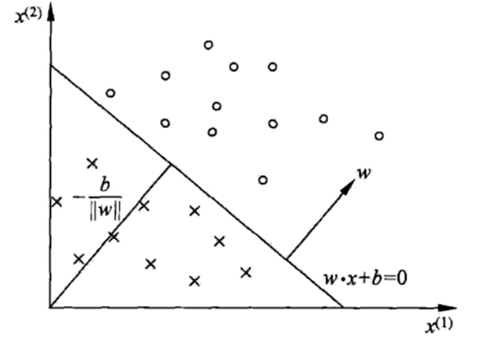
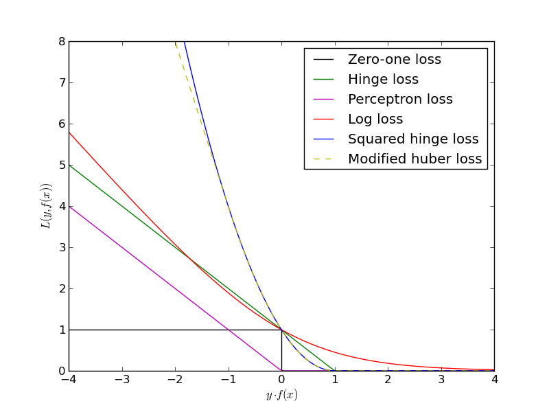

线性支持向量机
**支持向量机(Support Vecor Machine, SVM)**是一个拥有良好性能的分类算法，线性分类和非线性分类都支持。经过演进，现在也可以支持多元分类，同时经过扩展，也能应用于回归问题。本章的重点是SVM用于线性分类时的模型和损失函数优化的一个总结。
SVM前置知识：感知机
之前的感知机文章中提到，感知机目标就是在多维空间中找到一个超平面$w^Tx + b = 0$，将所有的二元类别隔开。如下图所示，超平面上方为一类，下方唯一类，并且这个超平面不止一个。

感知机的损失函数优化的思想是让所有误分类的点(定义为M)到超平面的距离和最小，即下式：
$$ \sum\limits_{x_i \in M}- y^{(i)}(w^Tx^{(i)} +b)\big / ||w||2 $$
由于分子和分母有固定的倍数关系，感知机中选择固定分母，保留分子，最终得到损失函数：
$$ \sum\limits{x_i \in M}- y^{(i)}(w^Tx^{(i)} +b) $$
如果选择固定分子，分类模型是否会被改进？之后SVM就会提到这个做法。
函数间隔与几何间隔
在分离空间的超平面固定为$w^Tx + b = 0$时，$|w^Tx + b |$表示点x到超平面的相对距离。通过观察$w^Tx + b$和y（正确分类结果）是否同号，我们判断分类是否正确。这里引入函数间隔的概念，定义函数间隔$\gamma^{‘}$为：
$$ \gamma^{’} = y(w^Tx + b) $$
可以看出它就是损失函数中，误分类点到超平面距离的分子。对于训练集中m个样本点对应的m个函数间隔的最小值，就是整个训练集的函数间隔。
函数间隔并不能正常反应点到超平面的距离，在感知机模型里也提到，当分子成比例的增长时，分母也是成倍增长。为了统一度量，我们需要对法向量$w$加上约束条件，这样我们就得到了几何间隔$γ$,定义为：
$$ \gamma = \frac{y(w^Tx + b)}{||w||_2} = \frac{\gamma^{'}}{||w||_2} $$
几何间隔才是点到超平面的真正距离，感知机模型里用到的距离就是几何距离。
支持向量
在感知机模型中，可以找到多个可以分类的超平面将数据分开，并且优化时希望所有的点都被准确分类。但是实际上离超平面很远的点已经被正确分类，它对超平面的位置没有影响。我们最关心是那些离超平面很近的点，这些点很容易被误分类。如果我们可以让离超平面比较近的点尽可能的远离超平面，最大化几何间隔，那么我们的分类效果会更好一些。SVM的思想起源正起于此。
如下图所示，分离超平面为$w^Tx+b=0$，如果所有的样本不光可以被超平面分开，还和超平面保持一定的函数距离（下图函数距离为1），那么这样的分类超平面是比感知机的分类超平面优的。可以证明，这样的超平面只有一个。和超平面平行的保持一定的函数距离的这两个超平面对应的向量，我们定义为支持向量，如下图虚线所示。

支持向量到超平面的距离为$1/||w||_2$,两个支持向量之间的距离为$2/||w||_2$
SVM模型目标函数与优化
SVM的模型是让所有点到超平面的距离大于一定的距离，也就是所有的分类点要在各自类别的支持向量两边。用数学式子表示为：
$$ max ;; \gamma = \frac{y(w^Tx + b)}{||w||_2} \ s.t ;; y_i(w^Tx_i + b) = \gamma^{‘(i)} \geq \gamma^{’} (i =1,2,…m) $$
其中，max指后面表达式的最大值
s.t 后面跟的是约束条件
一般取函数间隔$\gamma^{'}=1$，优化函数为：
$$ max ;; \frac{2}{||w||_2} \ s.t ;; y_i(w^Tx_i + b) \geq 1 (i =1,2,…m) $$
也就是说，我们要在约束条件$y_i(w^Tx_i+b)≥1;(i=1,2,…m)$下，最大化$2/||w||_2$。可以看出，这和感知机的优化方式不同，感知机是固定分母优化分子，而SVM是固定分子优化分母，同时加上了支持向量的限制。
显然，为了最大化问题，仅需要最大化$\frac{1}{||w||_2}$，根据范数知识，等价于最小化$\frac{1}{2}||w||_2^2$，于是可重写为：
$$ min ;; \frac{1}{2}||w||_2^2 \ s.t ;; y_i(w^Tx_i + b) \geq 1 (i =1,2,…m) $$
由于目标函数$\frac{1}{2}||w||_2^2$是凸函数，且约束条件不等式是仿射的，根据凸优化理论，我们可以通过拉格朗日函数将我们的优化目标转化为无约束的优化，优化函数为：
$$ L(w,b,\alpha) = \frac{1}{2}||w||2^2 - \sum\limits{i=1}^{m}\alpha_i[y_i(w^Tx_i + b) - 1] \ \alpha_i \geq 0 $$
由于引入了拉格朗日乘子，我们的优化目标变成：
$$ \underbrace{min}{w,b}; \underbrace{max}{\alpha_i \geq 0} L(w,b,\alpha) $$
这个优化函数满足KKT条件，可以通过拉格朗日对偶将优化问题转化为相应的对偶问题：
$$ \underbrace{max}{\alpha_i \geq 0} ;\underbrace{min}{w,b}; L(w,b,\alpha) $$
关于拉格朗日函数，对偶以及KKT条件，参考了这篇文章
从上式中，我们可以先求优化函数对于$w$和$b$的极小值。接着再求拉格朗日乘子$α$的极大值。
首先来求L(w,b,α)基于w和b的极小值，即$\underbrace{min}{w,b}; L(w,b,\alpha)$。这个极值我们可以通过对w和b分别求偏导数(拉格朗日乘数法)得到：
$$ \frac{\partial L}{\partial w} = 0 ;\Rightarrow w = \sum\limits{i=1}^{m}\alpha_iy_ix_i \ \frac{\partial L}{\partial b} = 0 ;\Rightarrow \sum\limits_{i=1}^{m}\alpha_iy_i = 0 $$
从上两式可以看出，已经求得了w和α的关系，只要后面接着能够求出优化函数极大化对应的α，就可以求出w。注意到b，由于上两式已经没有b（b的取值对优化无影响），所以最后的b可以有多个。根据w和α的关系，可以消除w。首先定义：
$$ \psi(\alpha) = \underbrace{min}_{w,b}; L(w,b,\alpha) \
\psi(\alpha) = \frac{1}{2}||w||2^2 - \sum\limits{i=1}^{m}\alpha_i[y_i(w^Tx_i + b) - 1] $$
化简
接下来就要将w消除，一步一步来看。首先，根据范数的定义：$||w||2^2 =w^Tw$，可以得到：
$$ \psi(\alpha) = \frac{1}{2}w^Tw-\sum\limits{i=1}^{m}\alpha_iy_iw^Tx_i - \sum\limits_{i=1}^{m}\alpha_iy_ib + \sum\limits_{i=1}^{m}\alpha_i $$
根据上面得到的w和$\alpha$的关系式，可以得到：
$$ \psi(\alpha) = \frac{1}{2}w^T\sum\limits_{i=1}^{m}\alpha_iy_ix_i -\sum\limits_{i=1}^{m}\alpha_iy_iw^Tx_i - \sum\limits_{i=1}^{m}\alpha_iy_ib + \sum\limits_{i=1}^{m}\alpha_i $$
把和样本无关的$w^T$提前：
$$ \psi(\alpha) = \frac{1}{2}w^T\sum\limits_{i=1}^{m}\alpha_iy_ix_i - w^T\sum\limits_{i=1}^{m}\alpha_iy_ix_i - \sum\limits_{i=1}^{m}\alpha_iy_ib + \sum\limits_{i=1}^{m}\alpha_i $$
合并同类项：
$$ \psi(\alpha) = - \frac{1}{2}w^T\sum\limits_{i=1}^{m}\alpha_iy_ix_i - \sum\limits_{i=1}^{m}\alpha_iy_ib + \sum\limits_{i=1}^{m}\alpha_i $$
把和样本无关的b提前:
$$ \psi(\alpha) = - \frac{1}{2}w^T\sum\limits_{i=1}^{m}\alpha_iy_ix_i - b\sum\limits_{i=1}^{m}\alpha_iy_i + \sum\limits_{i=1}^{m}\alpha_i $$
继续使用w和$\alpha$的关系式：
$$ \psi(\alpha) = -\frac{1}{2}(\sum\limits_{i=1}^{m}\alpha_iy_ix_i)^T(\sum\limits_{i=1}^{m}\alpha_iy_ix_i) - b\sum\limits_{i=1}^{m}\alpha_iy_i + \sum\limits_{i=1}^{m}\alpha_i $$
进行向量的转置运算。由于常量的转置是其本身，所有只有向量$x_i$被转置：
$$ \psi(\alpha) = -\frac{1}{2}\sum\limits_{i=1}^{m}\alpha_iy_ix_i^T\sum\limits_{i=1}^{m}\alpha_iy_ix_i - b\sum\limits_{i=1}^{m}\alpha_iy_i + \sum\limits_{i=1}^{m}\alpha_i $$
使用上面得到的$\sum\limits_{i=1}^{m}\alpha_iy_i = 0$：
$$ \psi(\alpha) = -\frac{1}{2}\sum\limits_{i=1}^{m}\alpha_iy_ix_i^T\sum\limits_{i=1}^{m}\alpha_iy_ix_i + \sum\limits_{i=1}^{m}\alpha_i $$
使用乘法法则合并第一项：
$$ \psi(\alpha) = -\frac{1}{2}\sum\limits_{i=1}^{m}\sum\limits_{j=1}^{m}\alpha_iy_ix_i^T\alpha_jy_jx_j + \sum\limits_{i=1}^{m}\alpha_i $$
最后调整一下位置：
$$ \psi(\alpha) = \sum\limits_{i=1}^{m}\alpha_i - \frac{1}{2}\sum\limits_{i=1}^{m}\sum\limits_{j=1}^{m}\alpha_i\alpha_jy_iy_jx_i^Tx_j $$
最终问题
从上面可以看出，通过对w,b极小化以后，优化函数ψ(α)仅仅只有α向量做参数。只要能够极大化ψ(α)，就可以求出此时对应的α，进而求出w,b。
对ψ(α)求极大化的数学表达式如下:
$$ \underbrace{max}{\alpha} -\frac{1}{2}\sum\limits{i=1}^{m}\sum\limits_{j=1}^{m}\alpha_i\alpha_jy_iy_j(x_i \bullet x_j) + \sum\limits_{i=1}^{m} \alpha_i \ s.t. ; \sum\limits_{i=1}^{m}\alpha_iy_i = 0 \ \alpha_i \geq 0 ; i=1,2,…m $$
去掉负号，即为等价的极小化问题如下：
$$ \underbrace{min}{\alpha} \frac{1}{2}\sum\limits{i=1}^{m}\sum\limits_{j=1}^{m}\alpha_i\alpha_jy_iy_j(x_i \bullet x_j) - \sum\limits_{i=1}^{m} \alpha_i \ s.t. ; \sum\limits_{i=1}^{m}\alpha_iy_i = 0 \ \alpha_i \geq 0 ; i=1,2,…m $$
只要可以求出上式极小化时对应的α向量就可以求出w和b了。具体怎么极小化上式得到对应的α，一般需要用到SMO算法，这个算法比较复杂，之后章节会专门来讲。在这里，假设通过SMO算法，我们得到了对应的$α$的值$α^∗$。
根据$w = \sum\limits_{i=1}^{m}\alpha_iy_ix_i$，可以求出对应的w的值：
$$ w^{} = \sum\limits_{i=1}^{m}\alpha_i^{}y_ix_i $$
求b稍微麻烦一点。注意到，对于任意支持向量$(x_x,y_s)$，都有:
$$ y_s(w^Tx_s+b) = y_s(\sum\limits_{i=1}^{m}\alpha_iy_ix_i^Tx_s+b) = 1 $$
假设有S个支持向量，则对应求出S个$b^∗$,理论上这些$b^∗$都可以作为最终的结果， 但是一般采用一种更健壮的办法，即求出所有支持向量所对应的$b^∗_s$，然后将其平均值作为最后的结果。注意到对于严格线性可分的SVM，b的值是有唯一解的，也就是这里求出的所有$b^∗$都是一样的，这里仍然这么写是为了和后面加入软间隔后的SVM的算法描述一致。
最后就是要得到支持向量。根据KKT条件中的对偶互补条件$\alpha_{i}^{*}(y_i(w^Tx_i + b) - 1) = 0$，如果$α_i>0$则有$y_i(w^Tx_i+b)=1$ 即点在支持向量上，否则如果$α_i=0$则有$y_i(w^Tx_i+b)≥1$，即样本在支持向量上或者已经被正确分类。
线性可分SVM的算法过程
总结一下线性可分SVM算法的完整流程。输入线性可分的m个样本${(x_1,y_1), (x_2,y_2), …, (x_m,y_m),}$，其中x为n维特征向量。y为二元输出，值为1，或者-1。输出是分离超平面的参数$w^∗$和$b^∗$和分类决策函数。算法流程如下：
- 构造优化约束问题：
$$ \underbrace{min}{\alpha} \frac{1}{2}\sum\limits{i=1}^{m}\sum\limits_{j=1}^{m}\alpha_i\alpha_jy_iy_j(x_i \bullet x_j) - \sum\limits_{i=1}^{m} \alpha_i \ s.t. ; \sum\limits_{i=1}^{m}\alpha_iy_i = 0 \ \alpha_i \geq 0 ; i=1,2,…m $$ - 用SMO算法求出上式最小时对应的$α$向量的值$α^∗$向量。
- 计算w的值$w^{} = \sum\limits_{i=1}^{m}\alpha_i^{}y_ix_i$
- 找出所有的S个支持向量，即满足$\alpha_s > 0$对应的样本$(x_s,y_s)$。通过$y_s(\sum\limits_{i=1}^{m}\alpha_iy_ix_i^Tx_s+b) = 1$计算出每个支持向量$(x_x, y_s)$对应的$b_s^$，计算出这些$b_s^{} = y_s - \sum\limits_{i=1}^{m}\alpha_iy_ix_i^Tx_s$，所有对应的$b_s^{}$平均值即为最终的b值$b^{} = \frac{1}{S}\sum\limits_{i=1}^{S}b_s^{*}$
- 最终的分类超平面为：$w^{} \bullet x + b^{} = 0$，最终的分类决策函数为：$f(x) = sign(w^{} \bullet x + b^{})$
sign函数作用是取符号
SVM的软间隔最大化模型
SVM有时会遇到线性不可分的数据。一部分线性不可分的原因是因为数据集中多了少量的异常点，这些异常点导致了数据集不能线性可分。本章将的就是SVM处理异常点的原理。
SVM面临的线性分类的问题
有时候本来数据的确是可分的，也就是说可以用线性分类SVM的学习方法来求解，但是却因为混入了异常点，导致不能线性可分，比如下图，本来数据是可以按下面的实线来做超平面分离的，可以由于一个橙色和一个蓝色的异常点导致我们没法按照上一篇线性支持向量机中的方法来分类：

另一种较好的情况，数据仍然是可分得，但异常点会严重影响模型的泛化效果。如下图，红色线为不考虑异常点的分类超平面，而粗虚线为考虑后的分类超平面，显然分类效果差了很多：

对于这些异常点带来的问题，SVM引入了软间隔最大化的方法来解决。
SVM的软间隔最大化
要了解软间隔，首先要知道软间隔是相对于硬间隔的，而硬间隔最大化就是上一章介绍的基础学习方法，即要求：
$$ min;; \frac{1}{2}||w||_2^2 \ s.t ;; y_i(w^Tx_i + b) \geq 1 (i =1,2,…m) $$
在硬间隔的基础上，SVM对训练集中的每一个样本$(x_i, y_i)$引入了一个松弛变量$\xi_i \geq 0$，使条件变为**函数间隔加上松弛变量大于等于1，即：
$$ y_i(w\bullet x_i +b) \geq 1- \xi_i $$
可以看出，相对于硬间隔，这里的函数距离要求放松了。但由于加上松弛变量是有成本的，所以每一个松弛变量$\xi_i$, 对应了一个代价$\xi_i$。这样就得到了软间隔最大化的SVM学习条件：
$$ min;; \frac{1}{2}||w||2^2 +C\sum\limits{i=1}^{m}\xi_i \ s.t. ;; y_i(w^Tx_i + b) \geq 1 - \xi_i ;;(i =1,2,…m) \ \xi_i \geq 0 ;;(i =1,2,…m) $$
其中$C>0$为乘法参数，可以理解为一般回归和分类问题正则化时候的参数。C越大，对误分类的惩罚就越大。我们希望$\frac{1}{2}||w||_2^2$尽量小，误分类的点尽可能的少。C使协调两者关系的正则化惩罚系数。
软间隔最大化的目标函数优化
SVM的软间隔最大化目标函数的优化与之前线性可分SVM优化方法类似，也是现用拉格朗日函数转化为无约束问题：
$$ L(w,b,\xi,\alpha,\mu) = \frac{1}{2}||w||2^2 +C\sum\limits{i=1}^{m}\xi_i - \sum\limits_{i=1}^{m}\alpha_i[y_i(w^Tx_i + b) - 1 + \xi_i] - \sum\limits_{i=1}^{m}\mu_i\xi_i $$
其中$\mu_i \geq 0, \alpha_i \geq 0$均为拉格朗日系数
这样要优化的目标函数为：
$$ \underbrace{min}{w,b,\xi}; \underbrace{max}{\alpha_i \geq 0, \mu_i \geq 0,} L(w,b,\alpha, \xi,\mu) $$
同样的，这个优化目标函数也满足KKT条件，可以通过拉格朗日对偶将其转化为对偶问题：
$$ \underbrace{max}{\alpha_i \geq 0, \mu_i \geq 0,} ; \underbrace{min}{w,b,\xi}; L(w,b,\alpha, \xi,\mu) $$
首先通过求偏导数，得到优化函数对于$w, b, \xi$的极小值：
$$ \frac{\partial L}{\partial b} = 0 ;\Rightarrow \sum\limits_{i=1}^{m}\alpha_iy_i = 0 $$
$$ \frac{\partial L}{\partial b} = 0 ;\Rightarrow \sum\limits_{i=1}^{m}\alpha_iy_i = 0 $$
$$ \frac{\partial L}{\partial \xi} = 0 ;\Rightarrow C- \alpha_i - \mu_i = 0 $$
通过上面三个式子，可以对目标函数进行化简。首先给出目标函数完整形式：
$$ L(w,b,\xi,\alpha,\mu) = \frac{1}{2}||w||2^2 +C\sum\limits{i=1}^{m}\xi_i - \sum\limits_{i=1}^{m}\alpha_i[y_i(w^Tx_i + b) - 1 + \xi_i] - \sum\limits_{i=1}^{m}\mu_i\xi_i $$
使用$C- \alpha_i - \mu_i = 0$，可得：
$$ L(w,b,\xi,\alpha,\mu) = \frac{1}{2}||w||2^2 - \sum\limits{i=1}^{m}\alpha_i[y_i(w^Tx_i + b) - 1 + \xi_i] + \sum\limits_{i=1}^{m}\alpha_i\xi_i $$
合并同类项：
$$ L(w,b,\xi,\alpha,\mu) = \frac{1}{2}||w||2^2 - \sum\limits{i=1}^{m}\alpha_i[y_i(w^Tx_i + b) - 1] $$
之后的化简与上一章线性可分SVM的化简一致，这里直接给出最终结果：
$$ L(w,b,\xi,\alpha,\mu) = \sum\limits_{i=1}^{m}\alpha_i - \frac{1}{2}\sum\limits_{i=1}^{m}\sum\limits_{j=1}^{m}\alpha_i\alpha_jy_iy_jx_i^Tx_j $$
可以看到结果是和上一章线性可分SVM相同的，不同的是对应的约束条件：
$$
\underbrace{ max }{\alpha} \sum\limits{i=1}^{m}\alpha_i - \frac{1}{2}\sum\limits_{i=1}^{m}\sum\limits_{j=1}^{m}\alpha_i\alpha_jy_iy_jx_i^Tx_j \
s.t. ; \sum\limits_{i=1}^{m}\alpha_iy_i = 0 \
C- \alpha_i - \mu_i = 0 \
\alpha_i,; \mu_i \geq 0 ;(i =1,2,…,m)
$$
对于后三个条件，可以消去$\mu_i$，同时将优化函数变号，变为求极小值，即：
$$
\underbrace{ max }{\alpha} \sum\limits{i=1}^{m}\alpha_i - \frac{1}{2}\sum\limits_{i=1}^{m}\sum\limits_{j=1}^{m}\alpha_i\alpha_jy_iy_jx_i^Tx_j \
s.t. ; \sum\limits_{i=1}^{m}\alpha_iy_i = 0 \
0 \leq \alpha_i \leq C
$$
这就是软间隔最大化时的线性可分SVM的优化目标形式，可以看出与上一篇硬间隔最大化的线性可分SVM相比，仅仅多了一个约束条件$0 \leq \alpha_i \leq C$，依旧可以通过SMO算法求出上式极小化时对应的$\alpha$向量，进而求出$w$和$b$。
软间隔最大化时的支持向量
在上一章的线性可分SVM，也就是硬间隔最大化时，支持向量较简单，只要满足$y_i(w^Tx_i + b) -1 =0$即可。根据KKT条件中的对偶互补条件，如果$\alpha_{i}^{}>0$则有$y_i(w^Tx_i + b) =1$，即点在支持向量上，否则$$ \alpha_{i}^{}=0 $$，则有$y_i(w^Tx_i + b) \geq 1$，即样本在支持向量上或已被正确分类。
对于软间隔最大化，会复杂一些，因为对每一个样本$(x_i, y_i)$引入了一个松弛变量$\xi_i \geq 0$。我们可以从下图研究软间隔最大化时支持向量的情况。其中，第i个点到对应类别支持向量的距离为$\frac{\xi_i}{||w||2}$：
根据对偶互补条件$\alpha{i}^{}(y_i(w^Tx_i + b) - 1 + \xi_i^{}) = 0$，可以得到：
- 如果$α=0$,那么$y_i(w^Tx_i + b) - 1 \geq 0$,即样本在间隔边界上或者已经被正确分类。如图中所有远离间隔边界的点。
- 如果$0 < \alpha < C$，那么$\xi_i = 0 ,;; y_i(w^Tx_i + b) - 1 = 0$，点在间隔边界上。
- 如果$\alpha = C$，那说明这可能是一个异常点，此时就要检查对应的$\xi_i$:
- 如果$0≤ξ_i≤1$, 那么点被正确分类，但是却在超平面和自己类别的间隔边界之间。如图中的样本2和4。
- 如果$ξ_i=1$, 那么点在分离超平面上，无法被正确分类。
- 如果$ξ_i>1$,那么点在超平面的另一侧，也就是说，这个点不能被正常分类。如图中的样本1和3。
软间隔最大化的线性可分SVM的算法
输入是线性可分的m个样本${(x_1,y_1), (x_2,y_2), …, (x_m,y_m),}$,其中x为n维特征向量。y为二元输出，值为1，或者-1。输出是分离超平面的参数$w^{}$和$b^{}$和分类决策函数。算法具体过程如下：
-
选择一个惩罚参数$C>0$，构造约束优化问题：
$$
\underbrace{ max }{\alpha} \sum\limits{i=1}^{m}\alpha_i - \frac{1}{2}\sum\limits_{i=1}^{m}\sum\limits_{j=1}^{m}\alpha_i\alpha_jy_iy_jx_i^Tx_j \
s.t. ; \sum\limits_{i=1}^{m}\alpha_iy_i = 0 \
0 \leq \alpha_i \leq C
$$ -
用SMO算法求出上式最小时对应的$\alpha$向量的值$\alpha^*$向量。
-
计算$w^{} = \sum\limits_{i=1}^{m}\alpha_i^{}y_ix_i$
-
找出所有的S个支持向量，即满足$0 \leq \alpha_i \leq C$对应的样本$(x_s,y_s)$。通过$y_s(\sum\limits_{i=1}^{m}\alpha_iy_ix_i^Tx_s+b) = 1$计算出每个支持向量$(x_x, y_s)$对应的$b_s^$，计算出这些$b_s^{} = y_s - \sum\limits_{i=1}^{m}\alpha_iy_ix_i^Tx_s$，所有对应的$b_s^{}$平均值即为最终的b值$b^{} = \frac{1}{S}\sum\limits_{i=1}^{S}b_s^{*}$
-
最终的分类超平面为：$w^{} \bullet x + b^{} = 0$，最终的分类决策函数为：$f(x) = sign(w^{} \bullet x + b^{})$
合页损失函数（Hinge loss）
在支持向量机中，构造目标函数时可以选用合页损失函数作为损失函数。合页损失函数不仅要分类正确，而且确信度足够高时损失才是0，也就是说，合页损失函数对学习有更高的要求。数学表达如下：
$$ \underbrace{ min}{w, b}[1-y_i(w \bullet x + b)]{+} + \lambda ||w||2^2 $$
其中，$L(y(w \bullet x + b)) = [1-y_i(w \bullet x + b)]{+}$称为合页损失函数(hinge loss function)，下标+表示为：
$$ [z]_{+}= \begin{cases} z & {z >0}\ 0& {z\leq 0} \end{cases} $$
常见的一些模型损失和函数间隔关系的图像如下图：

其中：
- 绿线即合页损失函数，如果点被正确分类，且函数间隔大于1，损失是0，否则损失是$1-y(w \bullet x + b)$
- 黑线是0-1损失函数，如果正确分类，损失为0，误分类损失为1。0-1损失函数是不可导的。
- 紫线是感知机模型损失函数，感知机的损失函数是$[-y_i(w \bullet x + b)]_{+}$，当样本正确分类时，损失为0；误分类时，损失为$-y_i(w \bullet x + b)$
- 红线是逻辑回归之类和最大熵模型对应的对数损失，损失函数是$log[1+exp(-y(w \bullet x + b))]$
线性可分SVM通过软间隔最大化，可以解决线性数据集带有异常点时的分类处理，但是解决不了一些确实线性不可分的数据。
线性不可分SVM和核函数
多项式回归
线性回归文章中，提到如何将多项式回归转化为线性回归。比如对于一个2特征的p次多项式回归模型：
$$ h_\theta(x_1, x_2) = \theta_0 + \theta_{1}x_1 + \theta_{2}x_{2} + \theta_{3}x_1^{2} + \theta_{4}x_2^{2} + \theta_{5}x_{1}x_2 $$
可以令$x_0 = 1, x_1 = x_1, x_2 = x_2, x_3 =x_1^{2}, x_4 = x_2^{2}, x_5 = x_{1}x_2$，这样就得到了下式：
$$ h_\theta(x_1, x_2) = \theta_0 + \theta_{1}x_1 + \theta_{2}x_{2} + \theta_{3}x_3 + \theta_{4}x_4 + \theta_{5}x_5 $$
可以看出，模型又回归了最基本的线性回归模型，是一个五元线性回归。对于每个二元样本特征$(x_1,x_2)$,我们得到一个五元样本特征$(1, x_1, x_2, x_{1}^2, x_{2}^2, x_{1}x_2)$。
从上面可以知道，对于二维的非线性数据，将其映射到五维后，就变成了线性的数据。也就是说，对于在低维线性不可分的数据，在映射到了高位之后，就变成线性可分的了。这个思想同样可以用于SVM的线性不可分数据上。
核函数的引入
首先再看一下线性可分SVM的优化目标函数（软间隔优化后）：
$$ \underbrace{ min }{\alpha} \frac{1}{2}\sum\limits{i=1}^{m}\sum\limits_{j=1}^{m}\alpha_i\alpha_jy_iy_jx_i \bullet x_j - \sum\limits_{i=1}^{m}\alpha_i \
s.t. ; \sum\limits_{i=1}^{m}\alpha_iy_i = 0 \
0 \leq \alpha_i \leq C $$
注意到，上式中低维特征仅仅以内积的形式出现（$x_i \bullet x_j$），如果此时定义一个低维空间到高维空间的映射$\phi$(类似上一节的二维到五维)，将特征映射到更高维度，让数据线性可分，即可继续按之前方法优化目标函数。也即优化目标函数变为：
$$ \underbrace{ min }{\alpha} \frac{1}{2}\sum\limits{i=1}^{m}\sum\limits_{j=1}^{m}\alpha_i\alpha_jy_iy_j \phi(x_i) \bullet \phi(x_j) - \sum\limits_{i=1}^{m}\alpha_i \
s.t. ; \sum\limits_{i=1}^{m}\alpha_iy_i = 0 \
0 \leq \alpha_i \leq C $$
可以看到，和线性可分SVM的优化目标函数的区别仅仅是将内积$x_i∙x_j$替换为$ϕ(x_i)∙ϕ(x_j)$。
虽然看上出解决了线性不可分的问题，但如果数据集拥有100个，1000个乃至无穷维特征，这就导致计算量十分庞大，甚至无法计算。为此，就需要引出核函数。
假设$\phi$是一个从低维的输入空间$\chi$(欧氏空间的子集或离散集合)到高位的希尔伯特空间的$\mathcal{H}$映射。那么如果存在函数$K(x,z)$，对于任意的$x,z \in \chi$，都有：
$$ K(x, z) = \phi(x) \bullet \phi(z) $$
那么我们就称$K(x,z)$为核函数。仔细观察上式可以发现，$K(x,z)$的计算是在低维空间来计算的，从而避免了刚刚提到了在高维空间计算内积的恐怖计算量。
核函数介绍
对于低维到高维的映射，核函数不止一个。什么样的函数才能成为核函数，是一个数学问题，较为复杂，可参考这篇文章。一般这里提到的核函数都是正定核函数，所以说明以下正定核函数的充分必要条件。一个函数想成为正定核函数，必须满足它里面任何点的集合形成的Gram矩阵式半正定的。也就是说，对于任意的$x_i \in \chi ， i=1,2,3…m$，$K(x_i,x_j)$对应的Gram矩阵$K = \bigg[ K(x_i, x_j )\bigg]$是半正定矩阵，则$K(x,z)$是正定核函数。
关于正定，半正定
根据上面的简介不难看出，袭击找一个核函数挺难的，对数学要求很高。不过机器学习领域已经有许多前人找到的核函数可以直接运用。下面介绍几个常用的核函数，这些核函数也是scikit-learn中支持的那些核函数。
线性核函数
线性核函数（Linear Kernel）其实就是前两章的线性可分SVM，表达式为：
$$ K(x, z) = x \bullet z $$
也就是说，线性可分SVM我们可以和线性不可分SVM归为一类，区别仅仅在于线性可分SVM用的是线性核函数。
多项式核函数
多项式核函数（Polynomial Kernel）是线性不可分SVM常用的核函数之一，表达式为：
$$ K(x, z) = （\gamma x \bullet z + r)^d $$
其中，$\gamma, r, d$都需要自己调参定义。
高斯核函数
高斯核函数（Gaussian Kernel），在SVM中也称为径向基核函数（Radial Basis Function，RBF），它是非线性分类SVM最主流的核函数。libsvm默认核函数就是它。表达式为：
$$ K(x, z) = exp(-\gamma||x-z||^2) $$
其中，$\gamma>0$，需要自己调参定义。
Sigmoid核函数
Sigmoid核函数（Sigmoid Kernel）也是线性不可分SVM常用的核函数之一，表达式为：
$$ K(x, z) = tanh（\gamma x \bullet z + r) $$
其中，$\gamma,r$都需要自己调参定义。
分类SVM算法小结
在有了核函数后，SVM算法才算比较完整。现对算法做一个总结，不区分是否线性可分。
输入是m个样本${(x_1,y_1), (x_2,y_2), …, (x_m,y_m),}$，其中x为n维特征向量。y为二元输出，值为1或-1。
输出为分离超平面的参数$w^$和$b^$和分类决策函数。算法具体过程如下：
- 选择适当的核函数$K(x,z)$和一个惩罚系数C（C > 0），构造约束优化问题：
$$ \underbrace{ min }{\alpha} \frac{1}{2}\sum\limits{i=1,j=1}^{m}\alpha_i\alpha_jy_iy_jK(x_i,x_j) - \sum\limits_{i=1}^{m}\alpha_i $$ - 用SMO算法算出上式最小时对应的$\alpha$向量对应的值$\alpha^*$向量。
- 得到$w^{} = \sum\limits_{i=1}^{m}\alpha_i^{}y_i\phi(x_i)$，此处可不直接显式的计算$w^*$。
- 找出所有的S个支持向量，即满足$0 \leq \alpha_s$对应的样本$(x_s,y_s)$。通过$y_s(\sum\limits_{i=1}^{m}\alpha_iy_iK(x_i,x_s)+b) = 1$计算出每个支持向量$(x_x, y_s)$对应的$b_s^$，计算出这些$b_s^{} = y_s - \sum\limits_{i=1}^{m}\alpha_iy_iK(x_i,x_s)+b)$，所有对应的$b_s^{}$平均值即为最终的b值$b^{} = \frac{1}{S}\sum\limits_{i=1}^{S}b_s^{*}$
- 最终的分类超平面为：$\sum\limits_{i=1}^{m}\alpha_i^{}y_iK(x, x_i)+ b^{} = 0$，最终的分类决策函数为：$f(x) = sign(\sum\limits_{i=1}^{m}\alpha_i^{}y_iK(x, x_i)+ b^{})$
If you like this blog or find it useful for you, you are welcome to comment on it. You are also welcome to share this blog, so that more people can participate in it. If the images used in the blog infringe your copyright, please contact the author to delete them. Thank you !